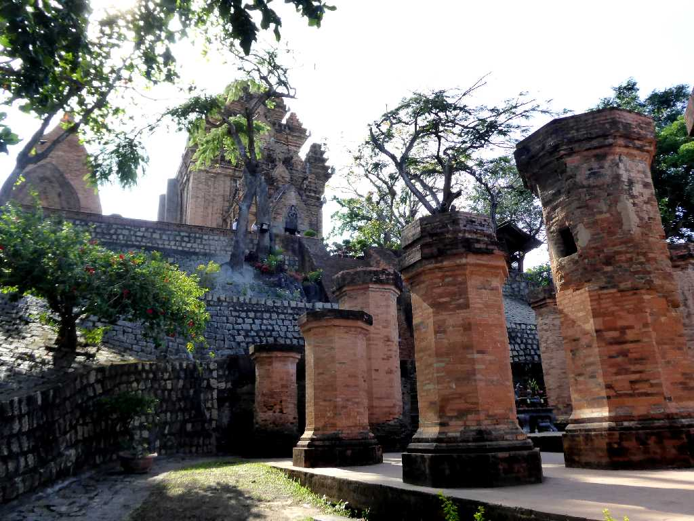
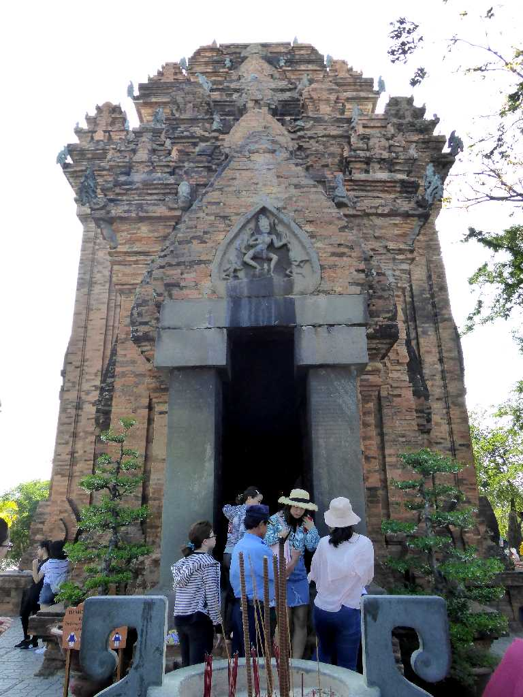
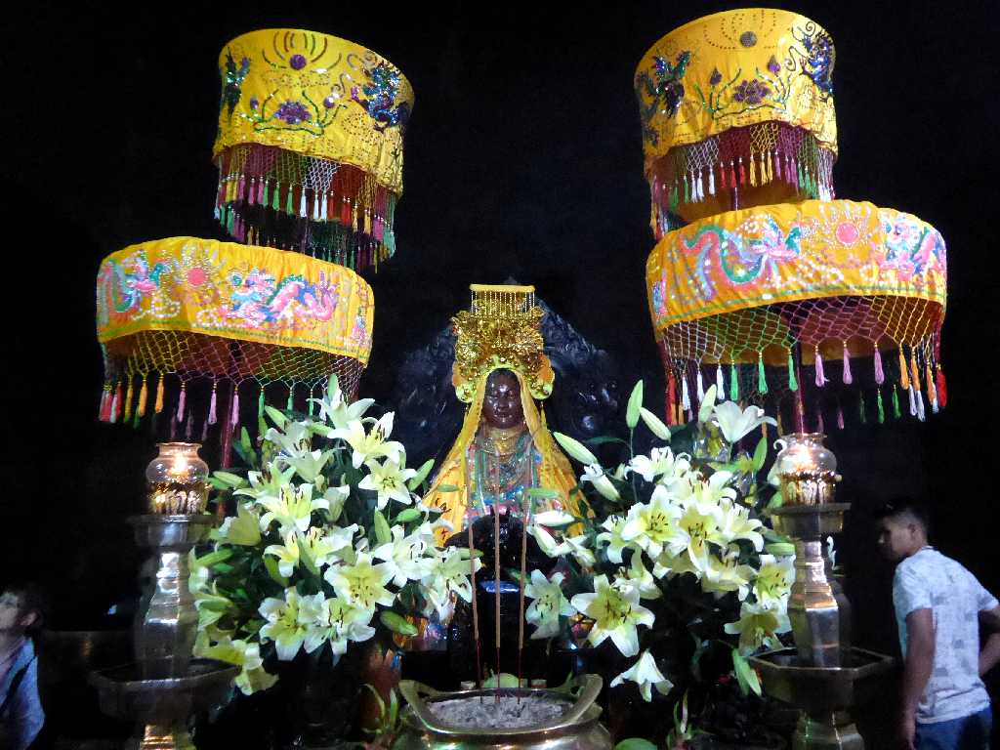
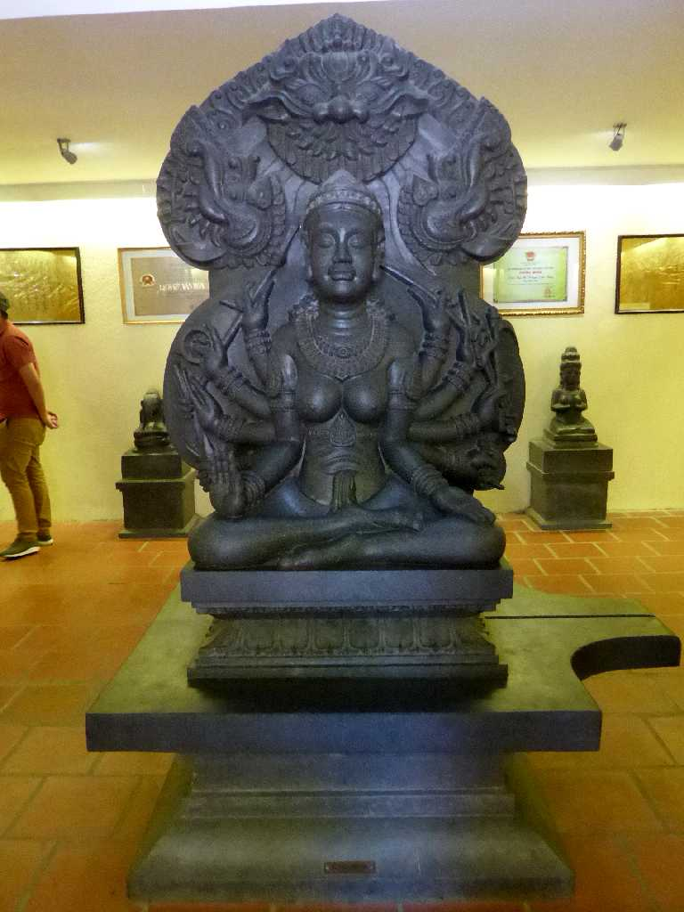
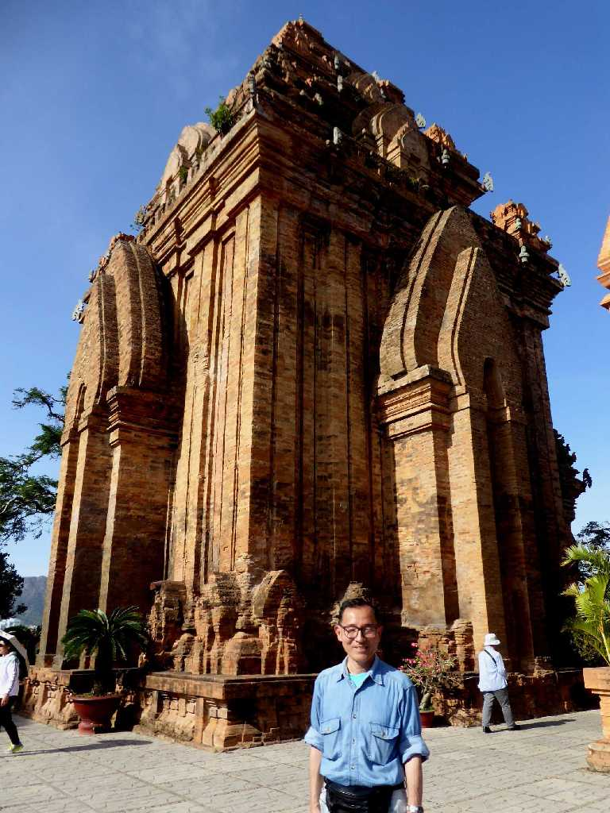
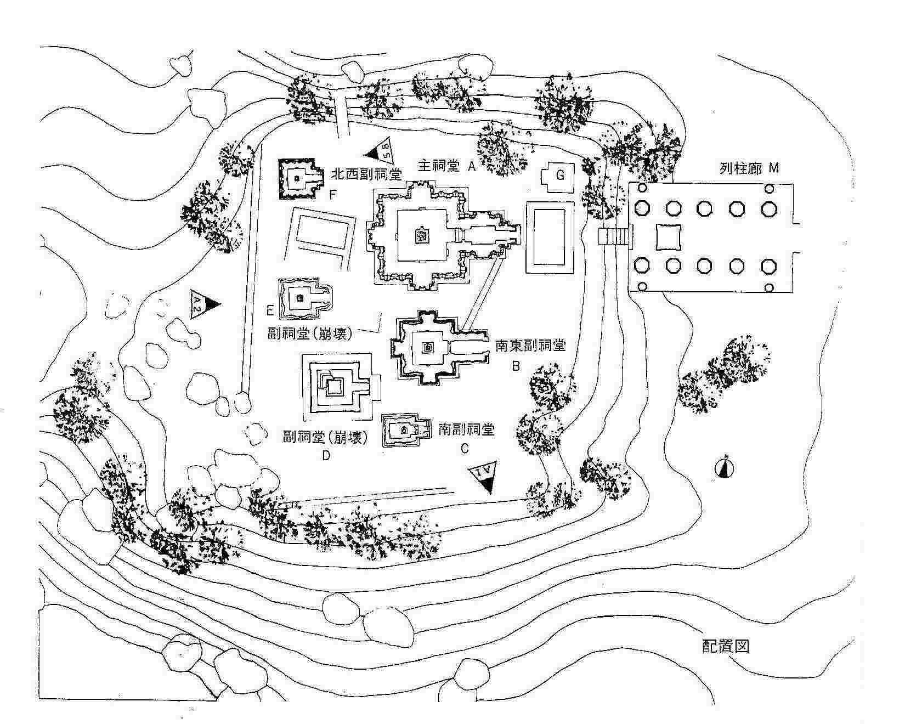

Po Nagar Nha Trang
チャンパ王国の１０世紀から１３世紀頃に創られたポーナガル様式のポーナガル寺院

Tháp Po Nagar
シヴァ神の妻であるウマー神と同じポーナガル女神を祀った寺院で８世紀末までは木造の祠堂が建つ聖地であった

Altar Tháp Po Nagar

Shiva in museum Po Nagar

April 1 2018 Po Nagar
